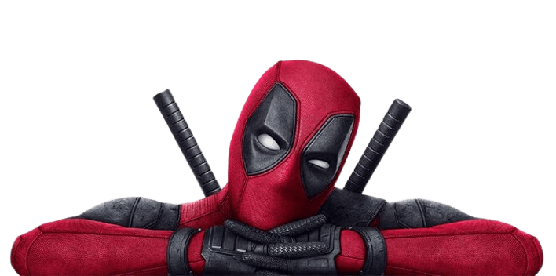
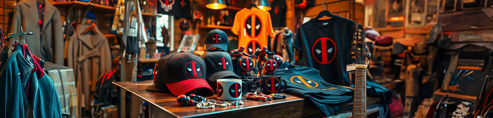
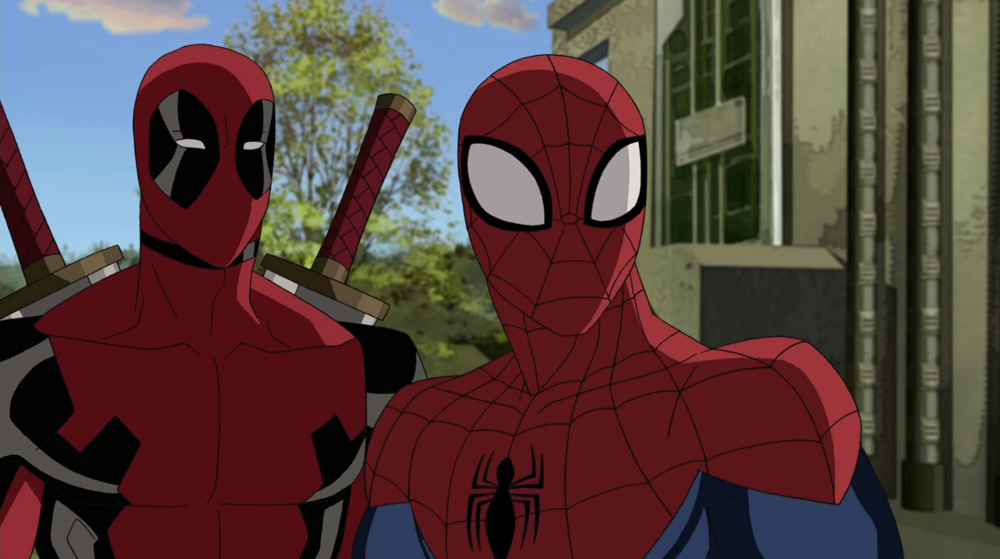
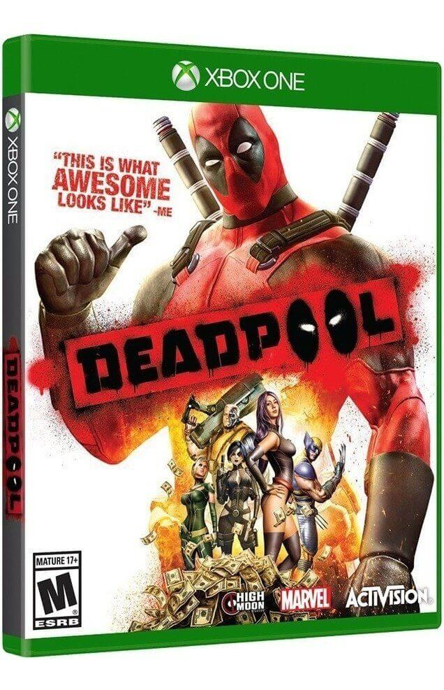
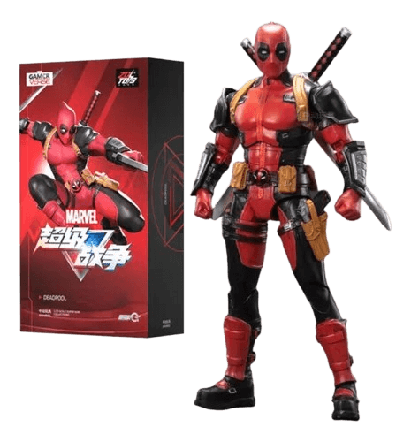
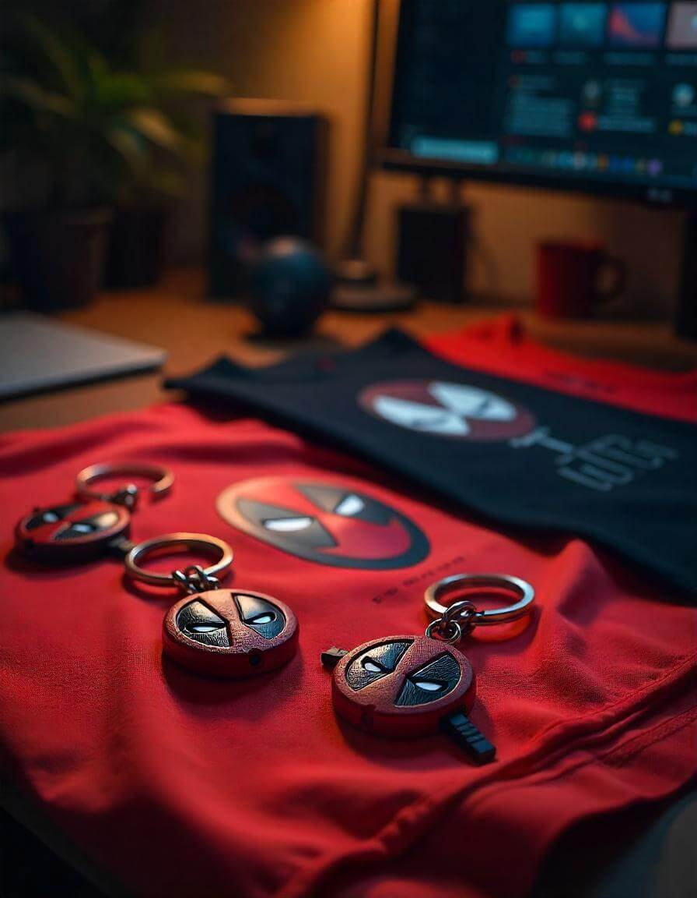
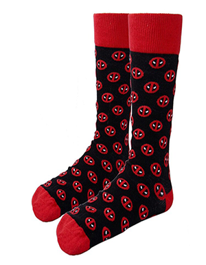
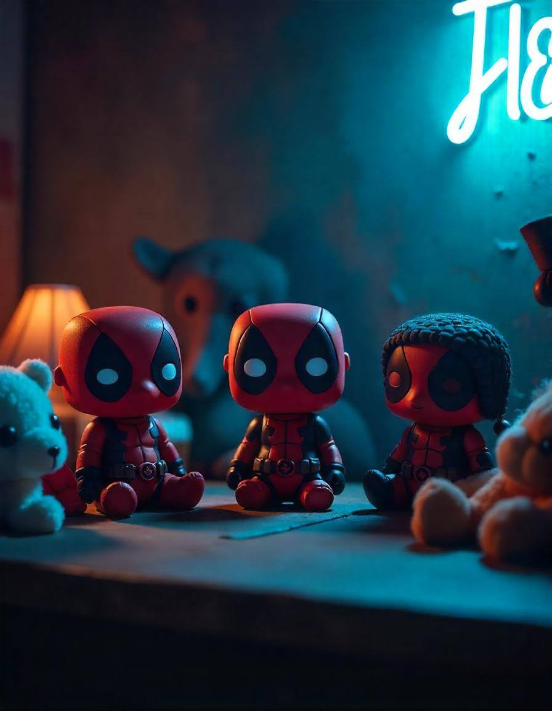
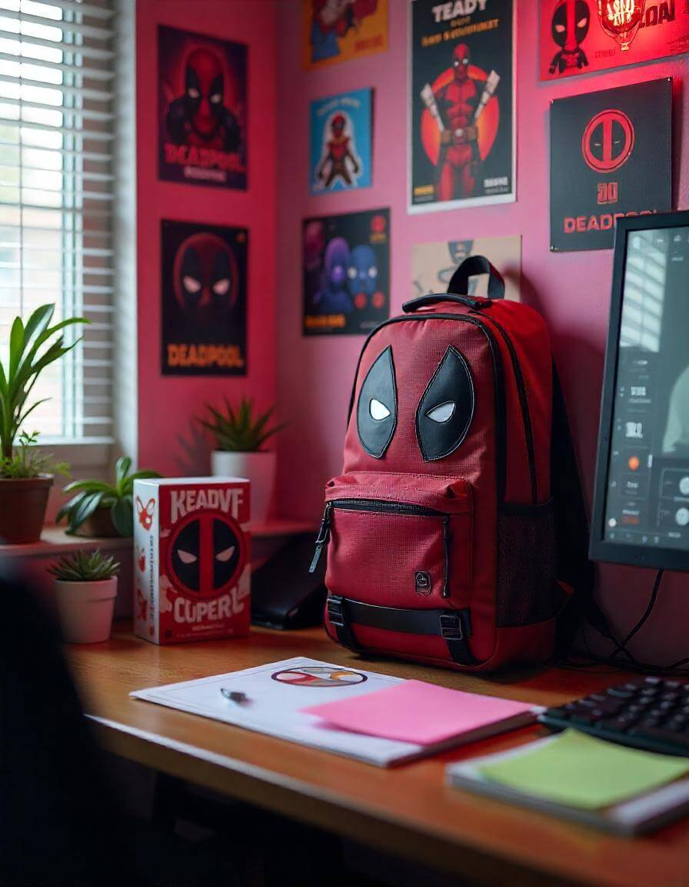

Cultura Pop y Merchandising

Referencias en Otros Medios

Televisión y Cine
Deadpool ha aparecido o ha sido mencionado en varias series de televisión animadas de Marvel, como Ultimate Spider-Man y Hulk vs Wolverine.
En el cine, Deadpool no solo protagoniza sus propias películas, sino que también ha influido en cómo se presentan otros personajes, especialmente en términos de tono y estilo. La exitosa fusión de comedia, acción y autoconciencia en Deadpool (2016) ha llevado a un cambio en cómo se abordan las películas de superhéroes, alentando una mayor experimentación en el género.
Videojuegos
Deadpool ha aparecido en varios videojuegos, como Marvel vs. Capcom 3, Lego Marvel Super Heroes y su propio juego Deadpool (2013), donde los jugadores pueden experimentar de primera mano su estilo de humor y combate.
En estos juegos, Deadpool a menudo rompe la cuarta pared, interactuando con los jugadores de manera directa, lo que añade una capa de meta-humor que pocos personajes pueden ofrecer. Productos de Merchandising.

Productos de Merchandising

Figuras de Acción:
Hay una vasta gama de figuras de Deadpool, que van desde figuras de acción asequibles hasta estatuillas de colección de alta gama producidas por empresas como Hot Toys y Sideshow Collectibles. Estas figuras suelen capturar su actitud irreverente y están disponibles en una variedad de poses y con numerosos accesorios.

Ropa y Accesorios:
Deadpool ha inspirado una amplia gama de productos de moda, incluyendo camisetas, remeras, gorras, y medias, con su icónica máscara y slogans humorísticos. El color rojo y negro de su traje es un motivo recurrente en estos productos, que se venden en tiendas de todo el mundo.

Videojuegos y Juguetes:
Además de los videojuegos en los que aparece, hay una amplia gama de juguetes relacionados con Deadpool, incluidos Funko Pops, peluches, y juguetes electrónicos que reproducen algunas de sus frases más famosas.


Otros Productos:
Deadpool también ha aparecido en una variedad de otros productos, como mochilas, pósters, juegos de mesa, y productos de papelería. Su popularidad ha hecho que su imagen sea fácilmente reconocible, lo que lo convierte en un favorito para los productos de cultura pop.